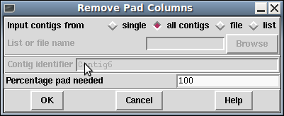

There are cases where we may have multiple alignments where every single sequence has a padding character such that the complete column is "*". This can occur when disassembling data from a falsely made join.
The Shuffle Pads algorithm will remove entire columns of pads when it finds them, but it is time consuming and it may also edit alignments elsewhere. The Remove Pad Columns function is a faster, more specific solution to this problem.

By default the function will only ever delete columns where 100% of the sequences have a pad/gap. However with appropriate due care it is possible to reduce this and allow removal of columns where a few sequences have a real base provided the overall percentage is still high. This is achieved by reducing the "Percentage pad needed" parameter.
Reducing from 100% is not recommended though as it is removal of data purely for tidyness sake, while the consensus algorithm will automatically find the correct solution.